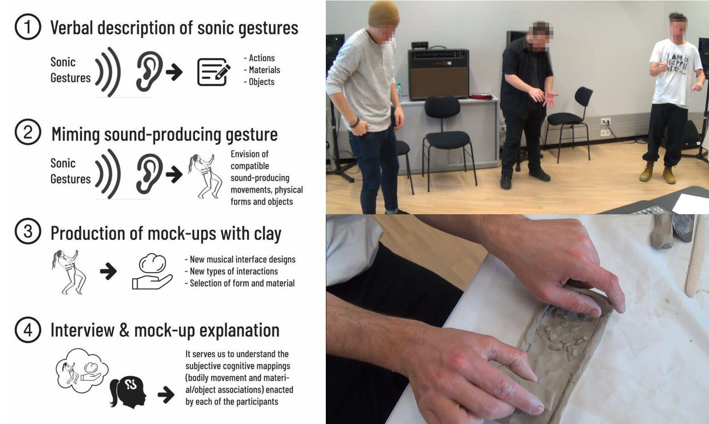
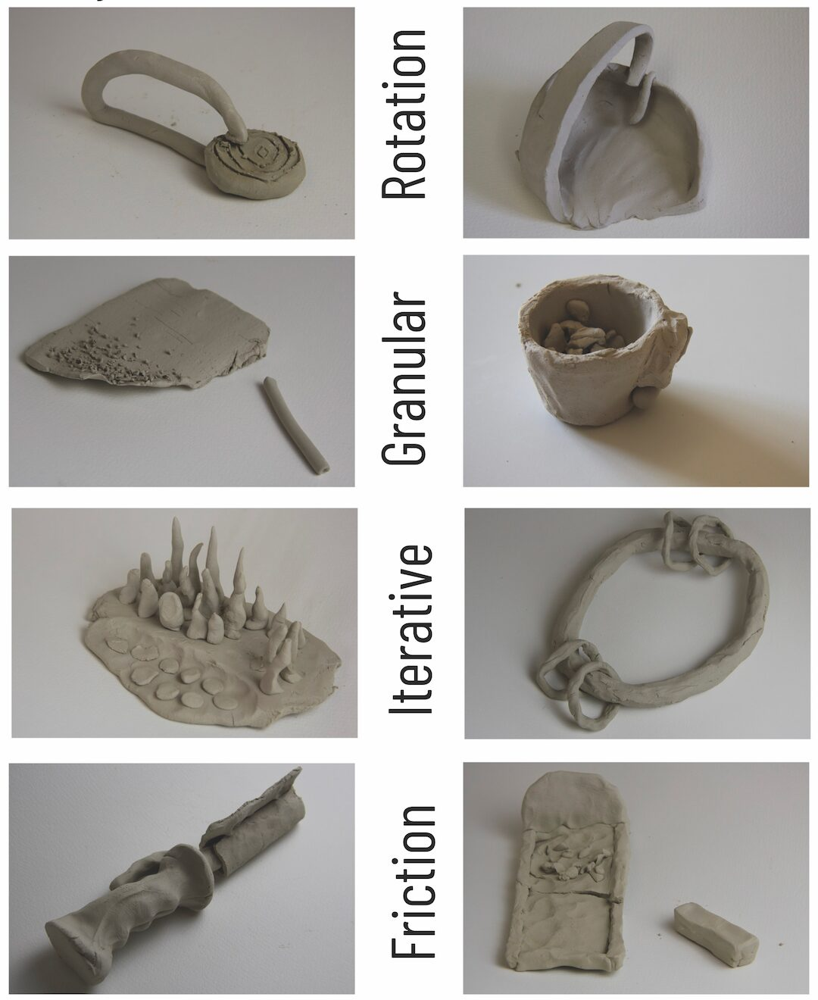
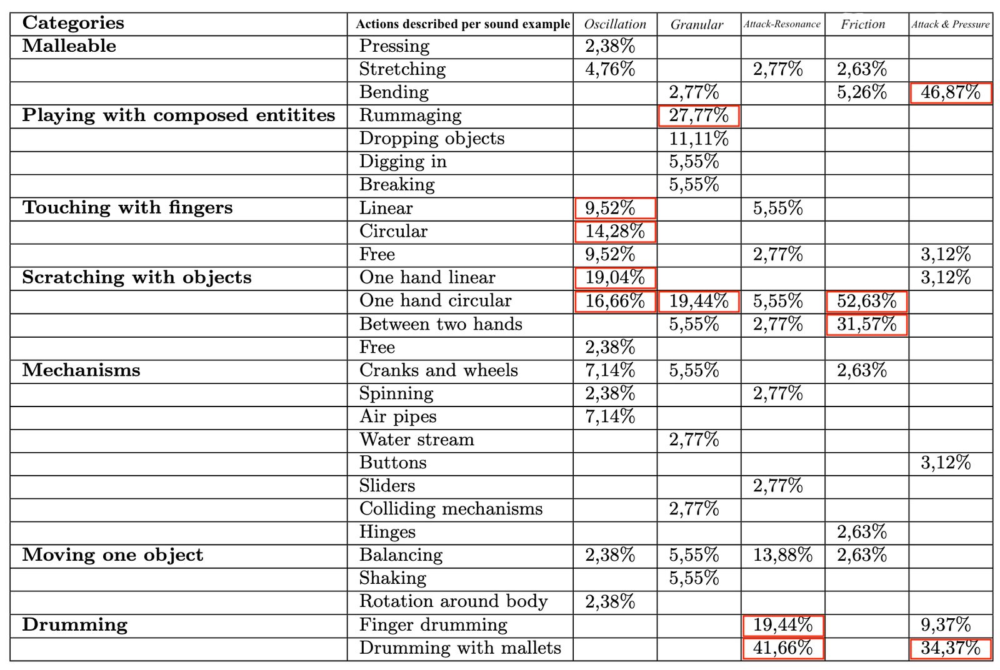
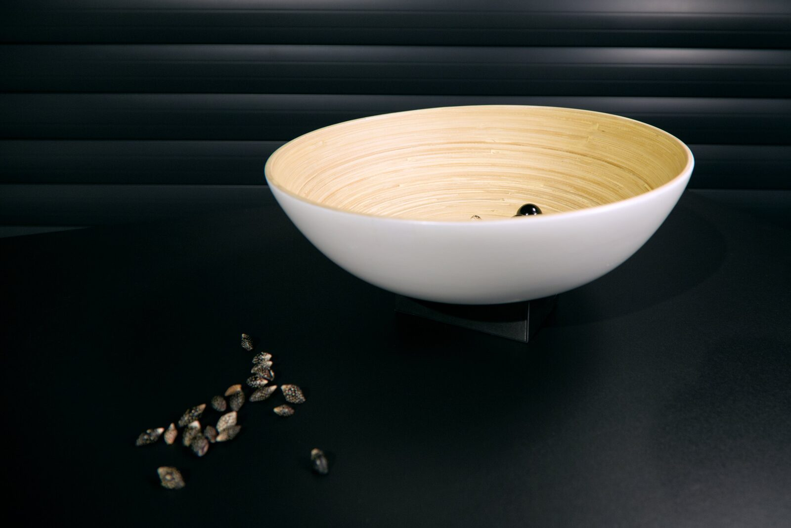
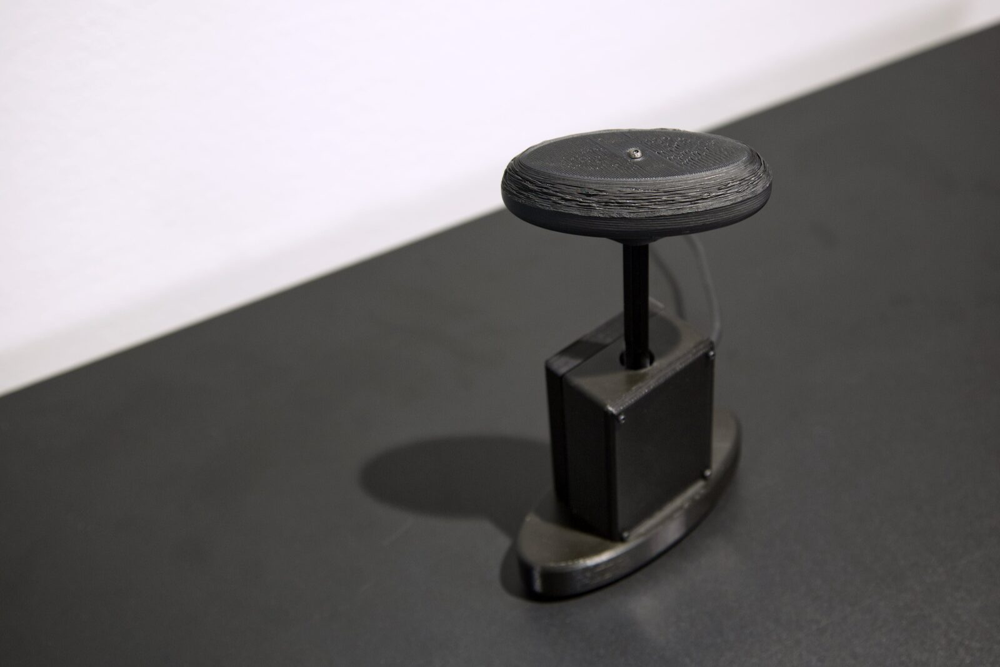
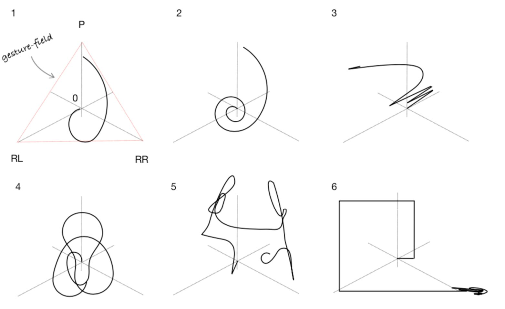
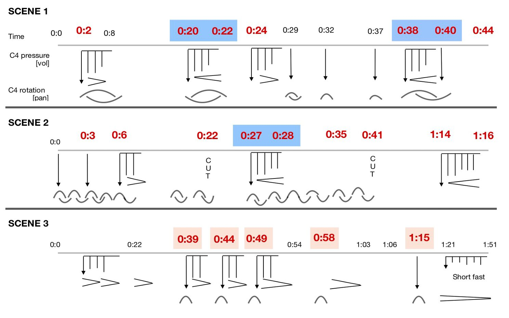
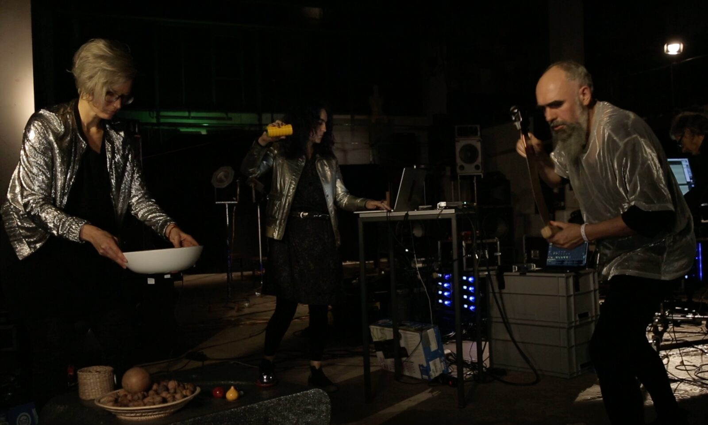

Embodied Gestures: Sculpting Energy-Motion Models into Musical Interfaces
Abstract
In this paper we discuss the beneficial aspects of incorporating energy-motion models as a design pattern in musical interface design. These models can be understood as archetypes of motion trajectories which are commonly applied in the analysis and composition of acousmatic music. With the aim of exploring a new possible paradigm for interface design, our research builds on the parallel investigation of embodied music cognition theory and the praxis of acousmatic music. After having run a large study for understanding a listener’s spontaneous rendering of form and movement, we built a number of digital instruments especially designed to emphasise a particular energy-motion profile. The evaluation through composition and performance indicates that this design paradigm can foster musical inventiveness and expression in the processes of composition and performance of gestural electronic music.
Keywords
NIME, interface design, acousmatic music, embodied cognition
CCS Concepts
•Applied computing → Sound and music computing; •Human-centered computing ~ Interaction Design ~ Interaction design processes and methods~User centered design;
Introduction: Energy-Motion Models
The NIME community has shown great interest in studying the role and meaning of ‘gesture’ in music [1][2][3][4][5]. Clearly, an instrument which is able to embody a performer’s gestural intention will have better chances to improve both workflow and expressiveness. For the electroacoustic composer Denis Smalley [6], “intuitive knowledge of the human physical gesture involved is inextricably bound up with our knowledge of music as an activity”. In fact within the field of electronic music, ‘gesture’ is alluded both to describe the characteristics of sound materials and as a forming method in musical composition and performance.
It is important to remark that, decades ago, composers in acousmatic music [7][8][6] described the tendency that listeners exhibit to deduce gestural activity from sound material. They observed how perceived temporal changes in sound materials -often called sonic morphologies- would always refer back to sensorimotor sensation. These simulated responses would extend aural information towards physical movement. This particular effect offers acousmatic composers a creative playground for exploring musical inventiveness, creating suggestive mental images, sonic sensations and artistic associations. Interestingly, this practice-based knowledge is compatible with the experimental observations made within the field of embodied music cognition [9].
A number of frameworks tried to formalise the analysis and composition of acousmatic music after Schaeffer’s treatise of 1966 [7]. Annette Vande Gorne [8] developed her theory of energy-motion models building on previous work made by Schaeffer, Bayle and Reibel. Energy-motion models are motion archetypes inspired by natural actions like oscillation, friction, flux, pressure, etc. The application of these models would begin at the very early stages of the musical piece’s conception. In Vande Gorne’s method, composers should devise sound materials following energy-motion models. During a recording session, the composer performs and explores a ‘sounding body’ (e.g. objects, musical instruments, etc) having a motion profile in mind. The objective is the production of expressive gestural sound materials. Citing Anderson [10], “through the energy model, the composer can develop a voluntary awareness of the internal stimulus which motivates and governs the energy flow unfolded through physical movement that results in gesture. Gesture would be articulated by and at the service of a particular energy model”. Vande Gorne methodically identified [8] the following energy models: Percussion-Resonance, Friction, Accumulation of Corpuscles, Oscillation, Swaying/Swinging, Rebound, Flux, Pressure-Deformation/Flexion, Swirls and Rotations and Spiral.
In electronic music1, extensive use of audio processing can result in sound materials displaying remote relationships to any known producing source. Addressing this issue, Denis Smalley proposed a framework [6] to describe the rich variety of sonic contents in electroacoustic music. He called it ‘spectromorphology’ and it consists of a set of tools for “understanding structural relations and behaviours as experienced in the temporal flux of [electroacoustic] music”. Under this framework, the spectromorphology of a musical piece (i.e. temporal spectral flux of music) is mostly discussed in relation to ‘gesture’. For Smalley ‘gesture’ is an energy-motion trajectory creating spectromorphological life. Smalley especifically describes how listeners always tend to deduce gestural activity from sound and introduces the notion of ‘gestural surrogacy’, a scale of relationships between sound material and a known gestural model (e.g. first, second or third order and remote surrogacy). For instance, in his third-order surrogacy level, gestures would be imaged in the music. In the case of ‘remote surrogacy’, music would be articulated from gestural vestiges. Developing further his framework, Smalley explains that listeners always attempt to predict the directionality of a morphological change. For illustrating it, the author describes a sort of image schema (e.g. onsets, continuants, terminations) with possible metaphorical interpretations (e.g. for onset: departure, emergence, anacrusis, attack, etc). Smalley also illustrates processes for typical motion and growth processes (unidirectional, reciprocal, cyclic, multidirectional) and texture motion (streaming, flocking, turbulence, convolution). Similar categorisations are made in relation to spectral and spatial changes.
Some scholars [11] argue that Smalley´s image schemas are implicit embodied cognitive theory. Under this hypothesis, electroacoustic and acousmatic music could be considered as embodied cognitive praxis extending its current theories. Researchers within embodied cognition have shown the motor-mimetic component in music perception and cognition [12][13][14]. The practice of acousmatic music assumes the mental simulation of sound-producing gestures. For Bridges [11], a key aspect of Smalley’s theories is that different types of gestures have different embodied–functional associations and, hence, causal dynamics. Bridges also compares Smalley’s categorisation with Lakoff [15] and Johnson [16] image schemas. A similar approach within embodied music cognition would be Godøy’s [9] extension of Schaeffer’s sonorous object towards the ‘gestural-sonorous object’ where we “recode musical sound into multimodal gestural-sonorous images based on biomechanical constraints”. These spontaneous images may also have visual (kinematic) and motor (effort, proprioceptive, etc.) components.
What is the importance of energy-motion profiles to the NIME community? Energy-motion models in music are bonded to the notion of musical intention. For Leman [17], musical intentions are local goals or musical targets in a performance, they are intentional actions which structure the physical development of the work. We could say that performing or composing would be a flux of intentional acts. Describing a performance as a sum of corporeal movements would be a very low level understanding of the task of playing an instrument. In our opinion, energy models surpass the parametric idea of ‘gesture’. A physical gesture would be one of the possible articulations of an energy-motion model. Gesture may be at the service of a particular motion schema determined at a higher level. We have seen the importance of these models in electroacoustic and acousmatic music. So, why should we not design interfaces emphasising these particular models? The exploration of energy-motion schemas could help us grasp better understanding of the motor mimetic origin of the different gestures we produce with our musical interfaces. This knowledge could also be applied to envisage new interface paradigms as we are going to describe in this paper.
Objectives, Hypothesis and Methods
We argue that a fruitful path for approaching musical interface design -especially towards the creation of gestural music- could be the incorporation of archetypal energy-motion models as design patterns. Musical interfaces following this design paradigm would afford the same type of physical gestures that a sound material inspires when it is listened. Our hypothesis is that such interfaces would be especially suitable to emphasise a performer’s gestural embodiment within an instrument. For instance, for performing a sound passage made from the circulation of elastic sonic movements in space, we would design musical interfaces affording by themselves, and through their physical affordances, similar “elastic” physical gestures to their performers.
The crucial question at the outset of this project dealt with finding successful ways of shaping the affordances of specific objects for suggesting particular body gestures. First, it was necessary to understand how listeners spontaneously envision sound-producing actions and physical materials from specific sound morphologies. After gaining this knowledge, we could develop a number of interface designs. For this reason we planned a methodology based on user-studies and experiential evaluation which could help us identify suitable solutions according to design patterns. In particular:
A large size user-study to understand how listeners envision sound-producing actions and physical materials while they try to mime control of gestural acousmatic music.
A second phase informed by the previous user-study where we would design and build digital instruments emphasising a number of energy-motion models.
Practice-based evaluation through the commission of musical performances and compositions to external collaborators.
User-Study On Music Control Mimicry
The aim of this user-study was understanding how people envision and materialise their own sound-producing gestures into physical characteristics when designing musical interfaces. A complete description of the user-study and its results can be found at a previous paper [18] presented in NIME. For pragmatic reasons, we will resume it here only.
Our activity took into account previous studies describing how people mime musical control [19][20][21]. In this regard, Caramiaux [22] showed that musical cognition is always situated and sonic memories allude to certain objects to explain interaction. For this reason, during the spontaneous rendering of movement, people also envision physical artifacts. That was a central idea that we decided to explore in our user-study.
The four stages of our user-study are illustrated in figure 1. Each participant listened to five short acousmatic studies2 that we created emphasising five different energy-motion models. The first audio example can be listened in the audio example 1 below. We used Vande Gorne’s taxonomy for differentiating them: oscillation, accumulation of corpuscles (granular), iterative attack and resonance, friction and pressing-deformation/flexion. The first part of the study consisted in a warm-up session where participants listened to the five musical examples and verbalised in a questionnaire the sources and physical materials they discerned.


Figure 1. Left: phases in the user-study. Right: Miming control of electroacoustic gestural music (friction) and an example of a mock-up produced for the same musical example
Audio example 1. User-Study: composition emphasising the ‘oscillatory’ energy-motion model.
Then, we asked our participants to imagine that they were performing the music they listened to. Participants had to stand up, move and mime control of the music. Spontaneously, each person envisioned compatible sound-producing actions for the music and began to move. Participants also perceived the morphological transformations we composed (e.g. frequency shift, density change) and they naturally complemented the original sound-producing actions with others accommodating these transformations. In other words, we observed the materialisation of the human motor-mimetic simulation process [13]. Each participant, without having to verbalise a word, naturally envisioned particular sound producing actions, gestures, artifacts and even physical materials. This process is documented in video 1.
Video 1. Embodied Gestures user-study video resume (friction energy-model)
For facilitating the communication of results, participants were invited to create mock-ups of the musical controllers they envisioned . They used clay because this material is much more neutral and flexible than other typical prototyping materials (e.g. lego blocks or cardboard). Our objective was the production of a large collection of physical artifacts informing the next stages of our research project. Some of these mock-ups (in total, more than 300) are shown in figure 2.


Figure 2. Examples of the mock-ups produced per energy-model.
Once the mock-ups were produced, we also interviewed each participant for obtaining a verbal explanation of his or her mental mapping.
A total amount of 65 participants participated in the study. We collected more than 300 mockups, 65 interviews and many hours of video recordings3. We analysed all this information and identified patterns of compatible sound-producing actions for each of the initial five energy-motion models. We have resumed these patterns in table 1 [18].


Table 1: Repertorie of sound-producing actions
Interface Design
Design Patterns
In its next phase, our research project was centered on designing and prototyping musical interfaces. Our solutions had to satisfy two conditions. On the one hand, the interfaces had to emphasise a particular energy-motion model and a possible family of associated physical gestures. Fortunately, the catalogue of compatible physical movements was defined after the user-study. On the other hand, our interfaces needed to offer ways to transform the overall sound characteristics during the performance (e.g. main pitch, the reverb level, loading presets, the overall volume, general mute, etc).
In the following table we resume the chosen gestural patterns suggesting particular sound-producing actions and transformations in the instruments.
Energy-motion Model | Sound-Producing Action | Sound Transformations |
Oscillation | Linear or circular trajectories of the hand between two poles | Handheld pressure and wrist rotation |
Granularity | Stirring objects on a bowl | Bowl’s rotation and vertical displacement |
Friction | Pressure and rotation of an object held between our hands | Dependant on the rotation are used |
Flexion | Surface finger drumming | Surface flexion |
Hardware and Software Solutions
We decided to implement all our prototypes with the same technical platform. We adopted the popular ESP32 microprocessor for capturing sensor data and transmitting it wirelessly to a host. The communication protocol we used was Open Sound Control. In this research project, the receiver host was responsible for developing a mapping strategy and synthesising sound from sensor data. Our preferred platforms for sound synthesis became Live Ableton, Reaper and GRM Player. Additionally, we programmed additional software applications (i.e. Max and Pure Data patches) to calibrate the electronic systems and to adequate captured data. In the following subsections we will describe the specifications of the musical interfaces we built during this research project.
Oscillatory Interface
In the user-study we observed a recurrent sound-producing action for the oscillatory music piece: participants moved one hand performing linear or circular trajectories. For us, it was important to incorporate haptic feedback and defining a clear playground for interaction. First, we decided to constrain the performer’s movements between two physical points. Second, we looked for technical systems able to track the absolute three dimensional position of the hand. Our solution consists of two Gametrak controllers tightening a central handheld object (figure 3). The Gametrak is a popular controller in our community [23] due to its simplicity and inherent capability to offer haptic feedback.

Figure 3: Oscillatory Interface
Using these two Gametrak controllers we effectively limited and emphasised the type of motion trajectory that we wanted to incorporate. In addition, the central handheld object integrates a three dimensional orientation sensor (BNO055) and two FSR sensors dedicated to perform transformations in the sound morphology. Therefore, the complete system affords linear and curved trajectories, wrist rotation and pressing on two points of the handheld device.
Granular Interface
Clearly in this case, the majority of participants envisioned the same artifact: a large number of small objects in a bowl. The associated action was something similar to rummaging or stirring the objects in the cavity of the bowl. Interfaces of this type have already been presented to our community [24][25][26] although studying the gestural origins of these interfaces was never the central focus of these projects. During the study, we observed how participants naturally held their bowls and tried to stir other imaginary objects. Thus, it was clear that these expectations had to be fulfilled in our interface.
Technically, our interface (figure 4) is a wooden bowl incorporating a small box with electronics under it: a piezo element attached to its surface, an orientation sensor and a distance sensor. The electrical signal produced by the piezo element is internally amplified and thresholded with two operational amplifiers. The output of this circuit provokes an interrupt in the ESP32 as soon as the piezo signal crosses the threshold. These interrupts occur so rapidly that one core of the ESP32 is fully dedicated to handle them. The number of interrupts is used to estimate the amplitude envelope. The measured delay between interrupts serves to estimate if one interrupt was the first of a new impact or if it was part of a sustained texture.


Figure 4: Granular Interface
Under the bowl, we can find a BNO055 orientation sensor and a Lidar distance sensor pointing towards the ground. These sensors allowed us mapping other actions performed with the bowl like rotating, tilting or displacing it.
Friction Interface
Friction defines itself from the intimate contact between two objects. From the observations done during the user-study, we deduced that this action had to take place between two objects held on our hands. As friction has a force component in the vertical axis (i.e. pressing) and at least another component in the horizontal plane, we decided to ideate an interface which could be pressed and partially rotated at the same time.
In our interface (figure 5), a metallic lever is fixed to the bar of a rotary encoder. Thus, if the user rotates the lever, the encoder rotates solidarily. Inside the box, and under the encoder, the force of a spring pulls both the encoder and the lever out of the box. Under the spring a force sensing resistor captures the pressure performed by the player to keep the lever inside the box.


Figure 5: Friction Interface
Bending Interface
The last musical example used in the user-study emphasised two energy-motion profiles: sound attack followed by resonance and flexion. Most participants envisioned an artifact which had to be drummed and bent during performance. Inspired by the working principle of a musical saw, we ideated an interface whose sound-producing action was a percussive attack and its transformation was performed by bending. As it can be observed in figure 5, the attack is captured using a pressure sensor on the surface of the metal. The bending amount is captured thanks to a BNO055 orientation sensor installed at the metal top part. The other two dimensions of the orientation sensor can be used to alter the sound too.
The musical exploration of this interface surprised us positively as we could easily create vibrato effects and expressive resonant textures by simply oscillating the metal part.

Figure 6: Bending Interface
Musical Outcomes
In addition to the usual technical and artistic tests developed in the lab, we commissioned three musical works to two professional composers and one improvisation group. Our aim was carrying a complete evaluation on the technical and artistic interest of our developments. We contacted the artists eighteen months before their respective premieres. After a training phase, the artists worked independently and separately for more than six months with copies of the four musical interfaces we have presented. In this section we are briefly describing the works produced during this period.
In the following video, extracts of these musical performances can be watched:
Embodied Gestures documentary with commissioned works explained (12:00)
Voices: composition and live performance by Theodoros Lotis
The internationally awarded composer Theodoros Lotis created and performed a musical work for one friction interface and interactive music system. Most of the sound material in ‘Voices’ consists of recordings of syllables and phonemes of an invented proto-language and audio recordings of dancers’ movements.
Lotis studied the friction interface and introduced a taxonomy of possible trajectories in what he called the ‘gesture-field’, the spatial limits of the energy-motion model. They can be observed in figure 7.


Figure 7: Theodoros Lotis’s taxonomy of motion profiles and their gesture-fields as they were used in Voices. Photo credits: Theodoros Lotis
The author explains that the gestural typology in ‘Voices’ does not seek to divide time into small or larger linear temporal structures but rather to establish a style of floating narration. The sound-producing gestures are divided into the following categories:
Long gestures with low velocity / fluid: These gestures concern both the pressure and the rotation of the handle of the interface. They are mainly preoccupied with the control of the overall volume and the panoramic.
Short gestures with high velocity / agitated: They undertake the micro-structural spectral evolution. They are often preoccupied with the articulation of agitated sonic figures and instant shifts in the stereo image.
Circuitous gestures: itinerant motions within the gesture-field. As the gesture-field is delimited by the hands and the physical motion of the performer as well as the motion of the interface’s handle, gestures can wander free or predetermined within these limits.
Loop enforcement / patterns: The cyclic and repetitive character of both rotation and pressure enforces the creation of loops and rhythmical patterns.
The accompanying interactive sonic system in ‘Voices’ consists of a Markov Chain model which stochastically selects the sound contents to be played. The interface’s rotation and pressure values are sent to a mapping network application where they are weighted. This strategy is used at aiming to mimic the overlapping one-to-many and many-to-one gesture-to-sound mappings found on acoustic musical instruments.


Figure 8: Capture of one page of the score of Voices by Theodoros Lotis. Photo Credits: Theodoros Lotis
Magistri Mei - Bruckner: composition for fixed media by Jaime Reis
The renown composer Jaime Reis explained us the origins of this work:
“I had this idea for ages to think about polyphony of gesture and space, and then to actually have a lot of layers and polyphony and so on. This is one of the conversations that I so often had with Annette [Vande Gorne] which is, what are the limits of space lines? How many movements can you listen to at the same time?”
‘Magistri Mei - Bruckner’ is a sixteen channel acousmatic composition. Interested in exploring Anton Bruckner’s sonorities and polyphony, Jaime Reis intensively used our interfaces to generate sound materials for this composition. In particular, following the acousmatic compositional method, Reis recorded many hours with a particular sounding body: our interfaces sculpting the sound of a number of GRM players4 loaded with a recording of Bruckner’s Missa Solemnis. After this, Reis worked on the organisation of the recorded sound materials and on a complex spatialisation strategy inspired by Bruckner’s idiosyncratic use of polyphony.
For Reis, the process of sound material generation was comparable to the ones he usually develops with acoustic instruments and objects. However, he described the difficulties he found for defining 3D spatial trajectories with our interfaces. Reis usually elaborates them in a highly parametric way, calculating complex spatial trajectories in the computer. Reis would have required the development of a specific intermediate application able to map his movements to the complex 3D spatial parameters he usually requires.
Improvisation by Steel Girls
The Steel Girls is an electroacoustic improvisation group formed by Angélica Castelló, Astrid Schwarz and Tobias Leibetseder. With a long experience in the scene, the Steel Girls members show a clear physical and acoustic approach to improvisation as they usually perform with amplified objects. In this case, our interest laid on evaluating how our interfaces could be used by a small ensemble of improvisers.
The Steel Girls prepared an improvisation for three of our interfaces: oscillation, granular and bending (figure 9). Castelló controlled the oscillation interface and mapped its data to a typical tape speed effect and a number of resonant filters. Leibetseder performed a bending interface for controlling a granular synthesiser. Schwarz played the granular bowl for triggering and transforming cascades of very short sound recordings taken previously from the bowl.


Figure 9: Steel Girls during their improvisation. Photo credits: Elisa Unger
Their improvisation resulted in a brilliant exercise of musicianship and communication on stage. As they did not count with any further plan apart from the way to begin their performance, each member of the trio explored musically the different dynamic ranges of the gestures afforded by the interfaces. Angélica Castelló (center in figure 9) who usually does not perform with digital instruments asserted before the premiere:
“For me, performing with computers is not sexy, but these instruments, they really are. Maybe they will reconcile myself with the digital world!”
Evaluation and Discussion
From the analysis of interviews carried out to our composers and performers, we concluded that our interfaces were positively evaluated for the tasks of composing and performing. In fact, all commissioned works were musically notable. These musicians especially remarked the idiomatic incorporation of energetic models to the interfaces, the interfaces’ ability to structure temporal play and the clear limits they have. In the following paragraphs we are discussing these features.
The interface’s structuring function
We observed in detail the way composers incorporated our interfaces to their practise. Composers first selected a corpus of recorded sounds according to an aesthetic or conceptual idea. Then, they musically explored the corpus with our interfaces. During this phase, the composers re-discovered those initial sound materials: they embodied the new sonorities created as possibilities for creating pieces. In this phase, we observed how our interfaces afforded an inherent temporal structure. Theodoros Lotis explained:
“It is interesting how these instruments affected my compositional work. While exploring them, I observed how I spontaneously began to create loops, something that I never had in my arsenal. The loops appeared because they were organically connected to my temporal play with the interfaces. These instruments allow you thinking about patterns of actions and I discovered how these patterns can easily create loops”.
We have given the name ‘interface’s structuring function’ to this effect, as in social sciences [27] ‘structure’ is the recurrent patterned arrangements which influence or limit the choices and opportunities available. Directly related to it, ‘agency’ would be the capacity of individuals to act independently and to make their own free choices. This structuring function could serve us to describe how a particular physical affordance can structure the temporal articulation of sequences of gestures performed by musicians, imposing an inherent physical and temporal flow, and by extent, imposing it to the temporal and morphological structure of the music too. In the case of Lotis, he became aware of this interface’s effect. He had the agency to fully escape from this structuring function but opposite to that, he explored its benefits for finally accepting it.
Idiomatic design towards intuitiveness
In the field of NIME and HCI we sometimes need to address complex and overwhelming issues. For instance, designing digital systems enhancing a performer’s embodiment with the instrument. In this project, we escaped from the elaboration of complex or intrincated interfaces. Our methodological approach began with experiencing -more than understanding- the idiosyncratic ways of doing in our musical field. In other words, we first collected experiential expertise in what concerns performing acousmatic music (e.g. workshops with composers, studio visits, concerts, building speaker systems, etc). Only after that, we were able to define what a possible intuitive solution for the issue in question could be. This is what Andrew Koenig [28] called ‘idiomatic design’, advocating a solution not only by understanding the nature of the problem but also how the solution will be used, taking into account the constraints and cultures difficulting its implementation.
In our opinion, the energy-motion paradigm can be considered an idiomatic solution for a complex issue within the field of acousmatic music. In the words of Theodoros Lotis:
“These instruments have limits and, after the limitless computer, it is good to go back to limits. All acoustic instruments are limited, like their tessitura and possibilities to articulate sound. And these interfaces have limits too. The way you push, the way you move around the objects, dictates how far you go with your time, with your temporal structures of music, and with the gestural structures. This was a good thing for me”.
The apparent simplicity of our interfaces constitutes a meaningful creative constraint stabilising crucial aspects of interaction, therefore fostering musical exploration and inventiveness. In the words of the Steel Girls:
“These instruments tend to put you immediately in a specific bodily movement, and I like that because is it like beginning to perform or dance with a really clear plan (Tobias Leibetseder, Steel girls)”.
Our interpretation of these comments is that the incorporation of energy-motion models to our design paradigm was done, in fact, at the risk of limiting and filtering the affordances of the physical artifacts we built. These limitations were perceived in this case as idiomatic, as creative constraints. However, we are aware that they could be evaluated as totally meaningless from the perspective of different musical genres.
From another viewpoint, we observed how the straightforward functionality of our interfaces lowered certain early barriers. No manuals, no menus, no special computer music culture is required to operate these interfaces. If the devices are well set up and powered, any group of people can benefit from their tacit knowledge to create or perform gestural music. As Michael Polanyi [29] affirms in regard to this type of tacit knowledge, “we know more than we call tell”. In this regard, our next steps in this project could consist in the evaluation of the effectiveness of these interfaces in musical pedagogy.
Interpersonal variability
As we have discussed in our previous paper [18], the user-study revealed a great interpersonal variability of results. Participants’ mental mappings are highly dependant on the person’s cultural background, on his or her corporeality and other social factors (e.g. temperament, emotional status, etc.). Thus, a pertinent question would be if it is possible to conduct more systematic and broad experimental studies collecting data on people's musical gestures and mental mappings and utilise such larger datasets to better model robust inclusive interfaces5. Our results indicate that, using our design method, it is possible to ideate highly idiomatic interfaces for specialised communities of users. However, two different persons will never have the exact range of corporeal abilities and cultural contexts (e.g. elderly and disabled people). We advocate here for a less language-oriented type of user-centred design based on spontaneous bodily mappings. A type of design oriented towards what it is spontaneously innate and natural in the users’s actual sensorimotor system.
Other aspects to consider
We have detected the following issues in our design paradigm:
Not all musicians who compose or perform digital, electroacoustic or even acousmatic music are interested in producing music from a gestural viewpoint. For instance, our interfaces will not be effective for the production of textural, ambient and drone music. Therefore, our interfaces could be described not only as idiomatic, but as highly specialised.
Our design paradigm presupposes an interest in sculpting the (spectro)morphologies of recorded sound material or lively synthesized sound. If the interest of the musician relies on composing within the discrete lattice of pitches, rhythms, durations and timbres [30], the application of our paradigm will probably result into a low resolution version of the musical intentions which one could perform with our interfaces.
Each of our interfaces is specially designed to emphasise only one energy-motion profile. In consequence, composers and performers may need to count with sets of ‘embodied gestures’ interfaces for composing from a diversity of energy-motion models. Although this issue could be understood as a limiting factor, we also see it as an opportunity for the creation of interface ensembles.
Conclusions
During this research period we were able to gain knowledge on a number of relevant issues affecting the NIME community. First, we elaborated and presented a musical interface ideation workshop where participants strictly designed with their bodies. This workshop could be an example of the possibilities of exploring tacit knowledge in design. Second, we illustrated how the union of theoretical knowledge -embodied music cognition- and artistic praxis -acousmatic music- could condense into a new interface design paradigm fulfilling the expectations and culture of our musical field. The paradigm that we have presented embodies many aspects of the scholastic methods for acousmatic composition through the incorporation of energy-motion models and image schemas. We have given examples of musical interfaces emphasising an energy-motion profile and how they can result in an effective solution to perform and compose gestural acousmatic music. The apparent simplicity and the limited affordances of our interfaces were evaluated as creative constraints by practitioners within our field. This stability resulted into musical inventiveness and the production of stirring musical works. Although this project was originally targeted at the acousmatic community, the applied knowledge gained during this period can positively inform many other branches of the NIME field.
Acknowledgements
This project was funded by the Austrian Science Fund FWF, Programm zur Entwicklung und Erschließung der Künste (PEEK AR99-G24)
Compliance with Ethical Standards
This research project involved human participants who confirmed their consent to engage in our experimental workshop.
Footnotes
We will not discuss the possible terminologies used to talk about different trends in academic, experimental and commercial electronic music. This paper is directed towards acousmatic and electroacoustic music. For a further analysis we forward to Leigh Landy’s excellent article “Electroacoustic Music Studies and Accepted Terminology: You can’t have one without the other” EMS: Electroacoustic Music Studies Network – Beijing 2006.
↩The five sound examples can be listened at the following URL: https://tamlab.ufg.at/projects/embodied-gestures/
↩Examples of the results obtained can be accessed from the URL https://tamlab.ufg.at/projects/embodied-gestures/
↩The GRM-Player is a tactile studio for sound created by INA GRM. It has a user’s interface which offers new ergonomics, the fruit of research around the idea of “making and listening”, a characteristic of the GRM from its origins.
↩This was a question proposed by one of our anonymous reviewers. We would like to thank you for it.
↩
Citations
A. Tanaka, B. Di Donato, M. Zbyszynski, and G. Roks. 2019. Designing Gestures for Continuous Sonic Interaction. Proceedings of the International Conference on New Interfaces for Musical Expression 2019, UFRGS, pp. 180–185.
↩G. Paine. 2004. Gesture and Musical Interaction : Interactive Engagement Through Dynamic Morphology. Proceedings of the International Conference on New Interfaces for Musical Expression, 2004 pp. 80–86.
↩R. Bencina, D. Wilde, and S. Langley. 2008. Gesture=Sound Experiments : Process and Mappings. Proceedings of the International Conference on New Interfaces for Musical Expression 2008, pp. 197–202.
↩W. Hsu. 2006. Managing Gesture and Timbre for Analysis and Instrument Control in an Interactive Environment. Proceedings of the International Conference on New Interfaces for Musical Expression 2006, pp. 376–379.
↩D. Wessel, M. Wright, and J. Schott. 2002. Intimate Musical Control of Computers with a Variety of Controllers and Gesture Mapping Metaphors. Proceedings of the International Conference on New Interfaces for Musical Expression 2002, pp. 192–194.
↩D. Smalley. 1997. Spectromorphology: explaining sound–shapes. Organised Sound, 2, 2 (August 1997), 107–126.
↩P. Schaeffer. 1966. Traité des objets musicaux. Le Seuil.
↩A. Vande Gorne. 2018. Treatise on Writing Acousmatic Music on Fixed Media. Volumen 9 de Lien : revue d'esthétique musicale,
↩
Volúmenes 9-2018 de Musiques & Recherches.R. Godøy. 2006. Gestural-Sonorous Objects: Embodied extensions of Schaeffer's conceptual apparatus. Organised Sound. 11. 149 - 157.
↩E. Anderson. 2011. Materials, meaning and metaphor: Unveiling spatio-temporal pertinences in acousmatic music. Doctoral thesis, City University London.
↩B. Bridges & R. Graham. 2015. Electroacoustic Music as Embodied Cognitive Praxis: Denis Smalley’s theory of spectromorphology as an implicit theory of embodied cognition. In Unknown Host Publication Electroacoustic Music Studies Network. http://www.ems-network.org/spip.php?rubrique48
↩A. Cox. 2001. The mimetic hypothesis and embodied musical meaning. Musicae Sclentiae, 5(2): 195-21, 2001.
↩R. I. Godøy. 2003. Motor-mimetic Music Cognition. Leonardo 36(4): 317–9, 2003.
↩R. I. Godøy. 2010. Images of Sonic Objects. Organised Sound, 15(1):54-62, 2010
↩G. Lakoff. 1987. Women, Fire, and Dangerous Things: What Categories Reveal About the Mind. Chicago: University of Chicago Press.
↩M. Johnson. 1987. The Body in the Mind: The Bodily Basis of Meaning, Imagination, and Reason. University of Chicago.
↩M. Leman. 2007. Embodied music cognition and mediation technology. The MIT Press.
↩E. Tomas, T. Gorbach, H. Tellioglu, and M. Kaltenbrunner. 2019. Material embodiments of electroacoustic music: an experimental workshop study. Proceedings of the International Conference on New Interfaces for Musical Expression, UFRGS, pp. 1–6. http://doi.org/10.5281/zenodo.3672842
↩R. Godøy, E. Haga, and A.R. Jensenius 2006. Playing air instruments: Mimicry of sound-producing gestures by novices and experts. Lecture Notes in ComputerScience. 2006, 3881, 256-267.
↩K. Nymoen, J. Torresen, R. Godøy, and A.R. Jensenius. A statistical approach to analyzing sound tracings. Speech, Sound and Music Processing: EmbracingResearch in India. 8th International Symposium, CMMR 2011. 20th International Symposium, FRSM2011. 2012, 120-145.
↩B. Caramiaux and P. Susini. Gestural embodiment ofenvironmental sounds: an experimental study. Proceedings of the International Conference on New Interfaces for Musical Expression, Oslo, Norway.
↩P. Caramiaux, A. Altavilla, S. Pobiner, andA. Tanaka. Form follows sound: Designing interactions from sonic memories. Proceedings of the 33rd Annual ACM Conference on Human Factors in Computing Systems, Pages 3943-3952, Seoul, Republic of Korea, April 18 -23, 2015.
↩M. Huberth and C. Nanou. 2016. Notation for 3D Motion Tracking Controllers: A Gametrak Case Study. Proceedings of the International Conference on New Interfaces for Musical Expression, Queensland Conservatorium Griffith University, pp. 96–105.
↩S. O'Modhrain and G. Essl. 2004. PebbleBox and CrumbleBag : Tactile Interfaces for Granular Synthesis. In Proceedings of the 2004 conference on New interfaces for musical expression, 2004.
↩M. Savary, D. Schwarz, and D. Pellerin. 2012. DIRTI —Dirty Tangible Interfaces. Proceedings of the International Conference on New Interfaces for Musical Expression, University of Michigan.
↩I. Hattwick, P. Beebe, Z. Hale, M. Wanderley, P. Leroux, and Fabrice Marandola. 2014. Unsounding Objects: Audio Feature Extraction for the Control of Sound Synthesis. Proceedings of the International Conference on New Interfaces for Musical Expression, Goldsmiths, University of London, pp. 597–600.
↩C. Barker. 2005. Cultural Studies: Theory and Practice. London: Sage.
↩A. Koenig. 1996. Idiomatic design. Communications of The ACM 39 (1996): 96-99.
↩M. Polanyi. 1966. The Tacit Dimension. University of Chicago Press: Chicago, 4.
↩T. Wishart . 1996. On Sonic Art, ed. S. Emmerson. Philadelphia, U.S.A.: Harwood; 1996.
↩